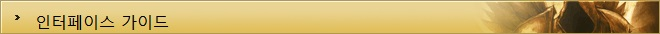
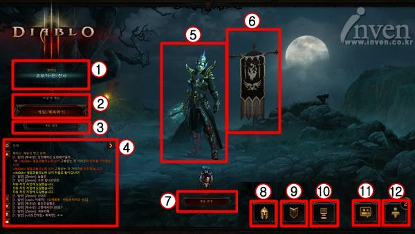
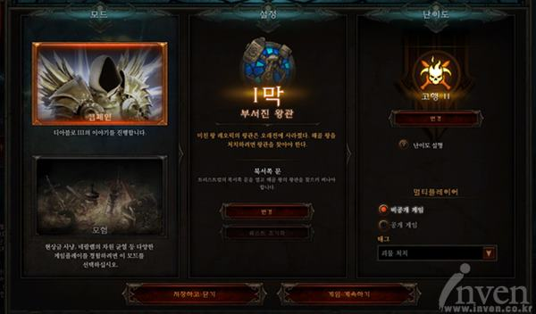
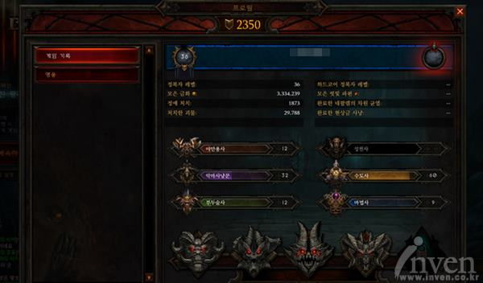
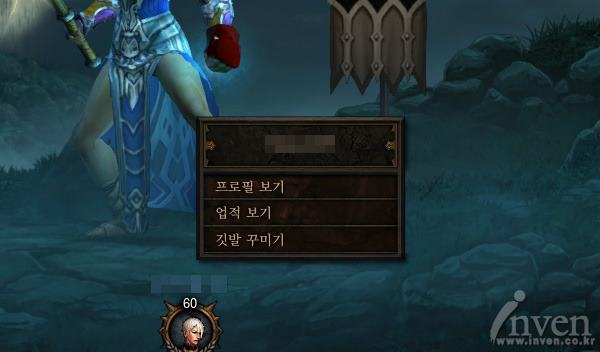
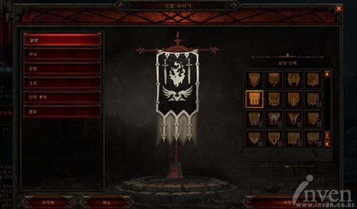
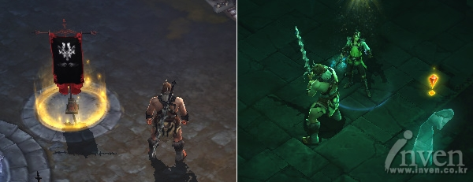
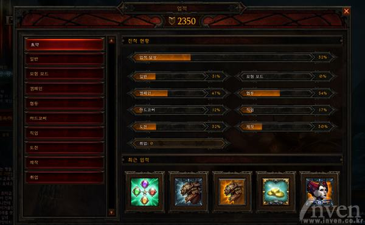
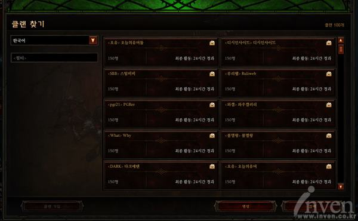
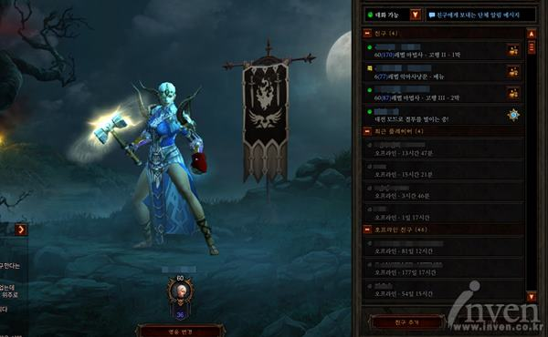

게임에 접속하면 캐릭터 로그인 화면이 나오는데, 이 화면에서는 캐릭터의 정보 확인,
업적 확인, 퀘스트 변경, 경매장 이용, 친구 기능과 채팅 기능의 이용 등이 가능하다.
캐릭터 로그인 화면은 다음과 같은 구성으로 이루어져 있다.

1. 퀘스트의 이름과 난이도
선택한 캐릭터가 현재 플레이 하고 있는 퀘스트의 이름과 퀘스트의 난이도가 표시된다.
2. 게임 계속하기
게임을 재개하는 메뉴로, 접속 종료 전의 퀘스트 클리어 상황을 그대로 이어받으며
필드에서 접속 종료 시 마을에서, 던전에서 접속 종료 시 해당 던전의 입구에서 다시 시작한다.
3. 게임 설정
캠페인 모드 설정과 진행중인 퀘스트를 변경하고 초기화할 수 있는 메뉴.
난이도를 설정할 수 있으며, 플레이어가 진행하는 방을 다른 플레이어가 진입할 수 있거나,
진입할 수 없도록 설정할 수 있다.

▲ 진행하거나 진행중인 게임 모드를 변경할 수 있다.
4. 채팅창
게임 안의 캐릭터 대사나 다른 플레이어와 대화한 내용이 표시되는 창이다.
그 전까지의 대화 내용은 화살표 아이콘을 클릭해서 확인 가능하며,
최하단의 말풍선을 클릭하면 배틀넷 친구와 즉시 대화도 가능하다.
5. 캐릭터의 외형 및 정보
현재 캐릭터가 장착한 장비의 외형을 보여주는 화면으로, 마우스 왼쪽 버튼 클릭 시
캐릭터 프로필을 볼 수 있고, 마우스 오른쪽 버튼 클릭 시 플레이어 옵션으로 들어간다.
플레이어 옵션에는 깃발을 입맛대로 바꿀 수 있는 깃발 커스터마이징과
프로필을 볼 수 있는 메뉴, 업적을 볼 수 있는 메뉴, 이렇게 총 세 가지 메뉴가 있다.

▲ 왼쪽 버튼 클릭 시 나타나는 캐릭터 프로필.

▲ 오른쪽 버튼 클릭 시 나타나는 업적 보기와 깃발 꾸미기 기능.
6. 깃발 커스터 마이징
깃발은 다른 플레이어와 함께 게임을 진행할때 필요한 기능으로, 깃발을 클릭하면 해당 플레이어 위치로 즉시 이동되는 기능을 가지고 있다.
깃발은 형태와 무늬, 인장과 인장 위치, 강조 표시, 깃발 색까지 다양한 커스터 마이징이 가능하다. 자신의 취향에 맞춰 깃발을 설정하고, 다른 플레이어와 함게 게임을 편리하게 즐겨보도록 하자.

▲ 다양한 형태로 자신만의 깃발을 설정할 수 있는 깃발 커스터 마이징.

▲ 깃발을 클릭하면, 깃발 소유자가 있는 곳으로 바로 이동할 수 있다.
7. 영웅 변경 버튼
현재 플레이하려는 영웅외에 다른 영웅을 선택하여 디아블로3를 즐길 수 있게 만드는 버튼이다.
버튼을 클릭하면 영웅 선택 화면으로 전환되며 새로운 영웅을 만들거나
기존에 있던 다른 영웅을 선택하여 게임을 플레이할 수 있다.
8. 프로필 확인 버튼
플레이어의 프로필을 확인할 수 있다. 프로필에서는 현재까지 획득한 금화량과 처치한 정예 수, 처치한 괴물 수, 정복자 레벨, 각 직업별 레벨이 표시된다.
9. 업적 확인 버튼
게임을 플레이하며 얻은 모든 업적이 표시되는 공간이다. 최근 달성한 업적 5가지가 업적창 하단에 나타나며,
업적창 왼 편에서는 각 모드별 획득할 수 있는 업적과 업적 필요 요구치가 나타난다.

▲ 게임을 진행하며 획득한 업적이 나타난다.
10. 게임 메뉴
게임 메뉴는 게임과 관련된 기본적인 것들을 보여주는 화면이다.
이 메뉴는 옵션 조절, 업적 확인, 고객 지원, 로그 아웃, 게임 종료로 구성되어 있으며
이 중 고객 지원을 클릭할 경우 블리자드 고객 지원 홈페이지로 바로 이동한다.
11. 커뮤니티 창
디아블로3에도 클랜 시스템이 존재한다. 커뮤니티 창에 있는 검색 버튼을 클릭하여,
가입하고자 하는 클랜에 가입 신청을 보내도록 하자.
클랜 플레이어들과 친목을 다지고 게임을 플레이하면 더욱 즐거운 디아블로3가 될 수 있을 것이다.

▲ 마음에 드는 클랜에 가입해보도록 하자.
12. 친구 창
배틀태그를 주고받은 플레이어는 친구가 된다. 친구 창을 통해 친구가 무엇을 하고 있는지
확인할 수 있으며 친구 방으로 진입하거나, 파티를 맺는 것이 가능하다.

▲ 블리자드 게임에 접속한 모든 친구들이 친구 창에 나타난다.
TOP